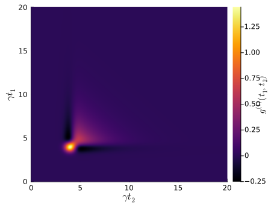
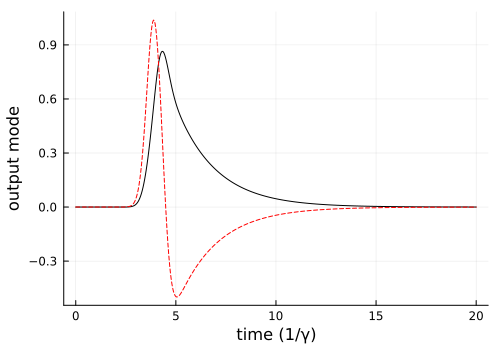
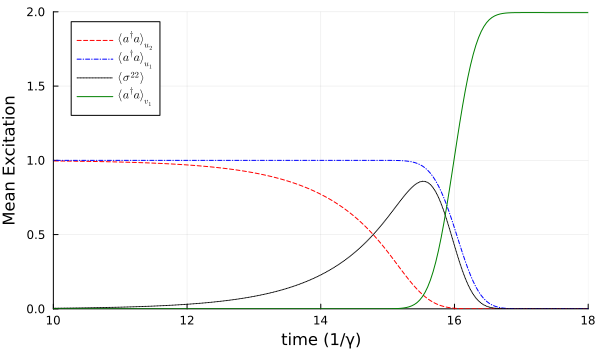

Perfect Splitting and Combining of a Two-photon Pulse
In this example, we simulate the perfect splitting of a two-photon pulse into two orthogonal temporal modes with one photon each. We then show the reverse process to combine the two orthogonal photons into a single temporal mode with two photons. The system is described in M. Lund , et al., Phys. Rev. A 107, 023715 (2023).
As usual, we start by loading the packages and defining the symbolic operators and parameters.
using QuantumInputOutput
using SecondQuantizedAlgebra
using QuantumOptics
using Plots
using LaTeXStrings
using LinearAlgebra
using DataInterpolations# symbolic Hilbert space
hu2 = FockSpace(:u2)
hu1 = FockSpace(:u1)
hs1 = NLevelSpace(:atom, 2)
hv1 = FockSpace(:v1)
h = hu2 ⊗ hu1 ⊗ hs1 ⊗ hv1
# symbolic operators
au2 = Destroy(h, :au_2, 1)
au1 = Destroy(h, :au_1, 2)
σ(i, j) = Transition(h, :σ, i, j, 3)
av1 = Destroy(h, :av_2, 4)
# symbolic parameters
@rnumbers γ Δ
gu1, gu2, gv1 = cnumbers("gu_1 gu_2 gv_1");We use the symbolic operators and parameters to define the SLH triples and cascade them to obtain the Hamiltonian and Lindblad for the system.
G_u2 = SLH(1, gu2'*au2, 0) # input cavity 2
G_u1 = SLH(1, gu1'*au1, 0) # input cavity 1
G_a = SLH(1, √(γ)*σ(1, 2), Δ*σ(2, 2)) # scattering atom
G_v1 = SLH(1, gv1'*av1, 0) # output cavity 1
G_cas = cascade(G_u2, G_u1, G_a, G_v1)H = hamiltonian(G_cas)\[-0.5 i {gu_2^{*}} {{gu_1^{*}}^{*}} au_{2} au_1^\dagger + 0.5 i {gu_1^{*}} {{gu_2^{*}}^{*}} au_2^\dagger au_{1} + \Delta {\sigma}^{{22}} -0.5 i \sqrt{\gamma} {gu_1^{*}} au_{1} {\sigma}^{{21}} -0.5 i {gu_2^{*}} \sqrt{\gamma} au_{2} {\sigma}^{{21}} + 0.5 i \sqrt{\gamma} {{gu_1^{*}}^{*}} au_1^\dagger {\sigma}^{{12}} + 0.5 i \sqrt{\gamma} {{gu_2^{*}}^{*}} au_2^\dagger {\sigma}^{{12}} -0.5 i {gu_1^{*}} {{gv_1^{*}}^{*}} au_{1} av_2^\dagger -0.5 i {gu_2^{*}} {{gv_1^{*}}^{*}} au_{2} av_2^\dagger -0.5 i \sqrt{\gamma} {{gv_1^{*}}^{*}} {\sigma}^{{12}} av_2^\dagger + 0.5 i {{gu_1^{*}}^{*}} {gv_1^{*}} au_1^\dagger av_{2} + 0.5 i {{gu_2^{*}}^{*}} {gv_1^{*}} au_2^\dagger av_{2} + 0.5 i \sqrt{\gamma} {gv_1^{*}} {\sigma}^{{21}} av_{2}\]
L = lindblad(G_cas)[1] # only one Lindblad in this example\[{gu_1^{*}} au_{1} + {gu_2^{*}} au_{2} + \sqrt{\gamma} {\sigma}^{{12}} + {gv_1^{*}} av_{2}\]
Next, the numerical parameters and functions of the system are defined.
γ_ = 1.0
Δ_ = 0.0
p_sym = [γ, Δ, gu2, gv1]
p_num = [γ_, Δ_, 0, 0]
dict_p = Dict(p_sym .=> p_num)
# Gaussian input pulse
τ = 0.38;
tp = 4/γ_
u(t) = 1/(sqrt(τ)*π^(1/4)) * exp(-(t - tp)^2 / (2*τ^2))
T = [0:0.002:1;]*20
ΔT = T[2] - T[1]
gu_ = coupling_input(u, T)
dict_p_t = Dict(gu1 => gu_)We translate the symbolic expressions to numerical operators and solve the time-dependent master equation with QuantumOptics.jl.
To obtain the output modes we do not use the second input mode and the output mode cavity. However, to keep the example short we include them already from the beginning since they are needed later. To perform time consuming parameter scans one should merely use the necessary Hilbert spaces. In this case, this would correspond to one input cavity and the two-level system. The kwarg operators of the function translate_qo provides a convenient way to use predefined numerical operators, see the example Two-sided Cavity with Atom.
# numeric bases
bu2 = FockBasis(2)
bu1 = FockBasis(2)
bs1 = NLevelBasis(2)
bv1 = FockBasis(2)
b = bu2 ⊗ bu1 ⊗ bs1 ⊗ bv1;
H_QO = translate_qo(H, b; parameter = dict_p, time_parameter = dict_p_t)
L_QO = translate_qo(L, b; parameter = dict_p, time_parameter = dict_p_t)
function input_output(t, ρ)
H = H_QO(t)
J = [L_QO(t)]
return H, J, dagger.(J)
end# time evolution
ψ0 = fockstate(bu2, 0) ⊗ fockstate(bu1, 2) ⊗ nlevelstate(bs1, 1) ⊗ fockstate(bv1, 0)
t_, ρt = timeevolution.master_dynamic(T, ψ0, input_output)Now we analyze the output modes with the two-time autocorrelation function $g^{(1)}(t_1,t_2) = \langle L_s^\dagger(t_1) L_s(t_2) \rangle$.
au1_qo = translate_qo(au1, b)
σ_qo(i, j) = translate_qo(σ(i, j), b)
Ls(t) = (gu_(t))'*au1_qo + √(γ_)*σ_qo(1, 2)
g1_m = correlation_matrix(T, ρt, input_output, Ls);
p = heatmap(
T,
T,
real.(g1_m);
c = :inferno,
xlabel = L"\gamma t_2",
ylabel = L"\gamma t_1",
colorbar_title = L"g^{(1)}(t_1,t_2)",
size = (450, 350),
)
p
The eigenvalues correspond to the mean photon number $n_i$ in the corresponding temporal eigenvector mode $v_i$. We find two modes with a mean photon number of one.
F = eigen(g1_m)
n_avg = real.(F.values)*ΔT
modes = F.vectors
v1_mode = (modes[:, end]) / √(ΔT)
v2_mode = (modes[:, end-1]) / √(ΔT)
@show n_avg[(end-1):end]n_avg[end - 1:end] = [0.9959816950397969, 1.0001254065173422]p = plot(t_, -real.(v1_mode); color = :black, label = "")
plot!(p, t_, real.(v2_mode); color = :red, ls = :dash, label = "")
plot!(p; xlabel = "time (1/γ)", ylabel = "output mode", size = (500, 350))
p
As described in the paper, we can define a rotated basis in which the two modes are not entangled and equally populated by a single photon Fock state. In the following, we define these rotated modes and use them to combine two single photons into a two photon Fock state. The temporal output mode of this two photon Fock state is the same as the previous input mode which separated the two single photons before.
v1_p = 1/√(2) * (v1_mode - v2_mode)
v2_p = 1/√(2) * (v1_mode + v2_mode)
# new output mode = old input mode
v1_new(t) = (u(T[end]-t))'
# new input modes
u1_new = conj.(reverse(v1_p))
u2_new = conj.(reverse(v2_p))The pulse from input cavity $u_2$ is scattered on the cavity $u_1$. This distortion needs to be taken into account for the coupling of $u_2$, which is done with the function effective_input_mode. The coupling of the $u_1$ cavity needs no adaptation, since it directly couples to the two-level system.
gu1_ = coupling_input(u1_new, T)
u_new_data = [u1_new, u2_new]
u_new_fct = [LinearInterpolation(u, T) for u in u_new_data]
# effective u2 mode and corresponding coupling
u2_for_gu2 = effective_input_mode(u_new_fct, T, 2)
gu2_ = coupling_input(u2_for_gu2, T)
# coupling of the output mode
gv1_ = coupling_output(v1_new, T)
# dictionary for the time-dependent functions
g_sym = [gu1, gu2, gv1]
g_num = [gu1_, gu2_, gv1_]
dict_p_t_out = Dict(g_sym .=> g_num)
# dictionary for the constant parameters
p_sym_out = [γ, Δ]
p_num_out = [γ_, Δ_]
dict_p_out = Dict(p_sym_out .=> p_num_out)The time-dependent couplings are used to define the numeric Hamiltonian and Lindblad term, and then solve the dynamics of the system.
H_QO_2 = translate_qo(H, b; parameter = dict_p_out, time_parameter = dict_p_t_out)
L_QO_2 = translate_qo(L, b; parameter = dict_p_out, time_parameter = dict_p_t_out)
function input_output_2(t, ρ)
H = H_QO_2(t)
J = [L_QO_2(t)]
return H, J, dagger.(J)
end
# time evolution
ψ0_out = fockstate(bu2, 1) ⊗ fockstate(bu1, 1) ⊗ nlevelstate(bs1, 1) ⊗ fockstate(bv1, 0)
t_2, ρt_2 = timeevolution.master_dynamic(T, ψ0_out, input_output_2)nu1_t_comb = real(expect(au1'*au1, ρt_2))
nu2_t_comb = real(expect(au2'*au2, ρt_2))
nv1_t_comb = real(expect(av1'*av1, ρt_2))
s22_t_comb = real(expect(σ(2, 2), ρt_2))We can see that the two single photons combine to a two photon Fock-state in one temporal mode.
p = plot(
T,
nu2_t_comb;
color = :red,
ls = :dash,
label = L"\langle a^\dagger a \rangle_{u_2}",
)
plot!(
p,
T,
nu1_t_comb;
color = :blue,
ls = :dashdot,
label = L"\langle a^\dagger a \rangle_{u_1}",
)
plot!(p, T, s22_t_comb; color = :black, ls = :dot, label = L"\langle \sigma^{22} \rangle")
plot!(
p,
T,
nv1_t_comb;
color = :green,
ls = :solid,
label = L"\langle a^\dagger a \rangle_{v_1}",
)
plot!(
p;
ylims = (0, 2),
xlims = (10, 18),
xlabel = "time (1/γ)",
ylabel = "Mean Excitation",
legend = :best,
size = (600, 350),
)
p
Package versions
These results were obtained using the following versions:
using InteractiveUtils
versioninfo()
using Pkg
Pkg.status(
[
"QuantumInputOutput",
"SecondQuantizedAlgebra",
"QuantumOptics",
"Plots",
"DataInterpolations",
"LaTeXStrings",
],
mode = PKGMODE_MANIFEST,
)Julia Version 1.12.6
Commit 15346901f00 (2026-04-09 19:20 UTC)
Build Info:
Official https://julialang.org release
Platform Info:
OS: Linux (x86_64-linux-gnu)
CPU: 4 × AMD EPYC 9V74 80-Core Processor
WORD_SIZE: 64
LLVM: libLLVM-18.1.7 (ORCJIT, znver4)
GC: Built with stock GC
Threads: 4 default, 1 interactive, 4 GC (on 4 virtual cores)
Environment:
JULIA_PKG_SERVER_REGISTRY_PREFERENCE = eager
JULIA_DEBUG = Documenter
JULIA_NUM_THREADS = auto
Status `~/work/QuantumInputOutput.jl/QuantumInputOutput.jl/docs/Manifest.toml`
[82cc6244] DataInterpolations v8.10.0
[b964fa9f] LaTeXStrings v1.4.0
[91a5bcdd] Plots v1.41.6
[18f9eda6] QuantumInputOutput v0.1.0 `~/work/QuantumInputOutput.jl/QuantumInputOutput.jl`
[6e0679c1] QuantumOptics v1.2.6
⌅ [f7aa4685] SecondQuantizedAlgebra v0.4.5
Info Packages marked with ⌅ have new versions available but compatibility constraints restrict them from upgrading. To see why use `status --outdated -m`This page was generated using Literate.jl.